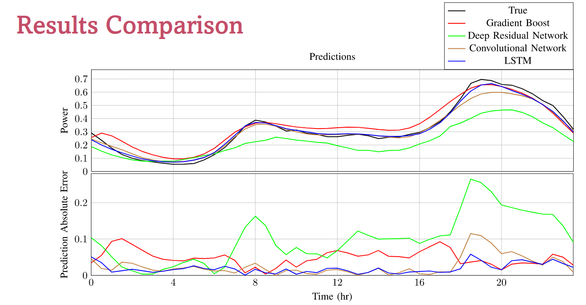
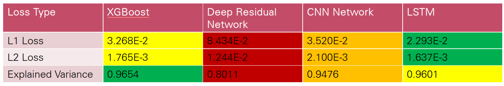

Power Forecasting With DNN
Introduction
This is a project for power consumption forecasting with deep neural networks. This project utilized several different neural network architectures to predict power consumption.
Data and Data Preprocessing
The data is from Kaggle. The data is from smart meters in homes in the London area dataset. The data is from 2011 to 2014, in 30-minute intervals. It contains power data per half hour as well as several weather features.
To process the weather data, it was augmented to match the half-hour frequency of the power dataset through the use of quadratic interpolation. For descriptive columns, the descriptors from preceding rows were copied. The important columns and processes from the descriptor headings were processed into numerical values. After processing, the weather data contains information on visibility, temperature, dew point, pressure, wind speed, precipitation type, and humidity.
The power data was normalized by summing the power consumption across all households for each time interval and dividing by the total number of homes per time index. All values were then normalized using sklearn's MinMaxScaler.
Training Methodology
A standard 70% Training, 10% Validation, and 20% Testing split was used.
Models
Baseline Model
To compare our neural networks, the XGBoost algorithm was utilized. The number of estimators used was 1000.
Deep Residual Network
The first neural network used was a Deep Residual Neural Network. This network and all proceeding networks were implemented in PyTorch. Knowing that time series forecasting is an extremely complicated problem for a single output, it was clear that a linear network would need many layers to meaningfully process the input and predict an output window. As a result, residual connections were used between each layer to reduce the vanishing gradient problem that plagues neural networks deeper than seven layers.

The above figure shows the overall architecture of the Deep Residual Network. Residual connections are in the form of concatenating the output of a layer with its input, allowing the network to have ten layers with roughly 1000 nodes at each hidden layer. However, the ultra-deepness of the network also comes at the cost of having millions of learnable parameters.
Convolutional Preprocessing - Fully Connected (CONV)
A convolutional pre-processing (CONV) layer was employed before the dense layers of the neural network to take advantage of the time dependence of the input window. This layer effectively acts as a feature extraction layer for the power consumption data, allowing for more meaningful input to the dense layers. There is locality between each half-hour measurement in the input window, and a convolution through time helps the network extract these features more effectively before the dense layers.

(CONV) - LSTM
Building off the success of the CONV layer, the use of an LSTM was identified to take advantage of the interdependence of each point in the output window on one another. Looking at each half-hour prediction in the 24-hour output window, all predictions (except for the first) are dependent on all previous predictions. This makes LSTM ideal due to its cyclical method of inference. The LSTM architecture was implemented as shown in the below figure: a CONV layer extracts features from the power consumption data, followed by a linear layer to expand the features into an input sequence for the LSTM. Finally, an LSTM processes the input sequence and linear layers decode outputs from the LSTM into a power forecast.

Results
Final Day Forecast Comparison
The figure below shows the final day in the test set for each model. The true results are also shown for comparison. The CONV-LSTM model is the most accurate, followed by XGBoost, then the CONV model, and finally the Deep Residual Network. The XGBoost model tends to overestimate, which can be a conservative estimate for power consumption.
Loss Comparison
Training Time Comparison